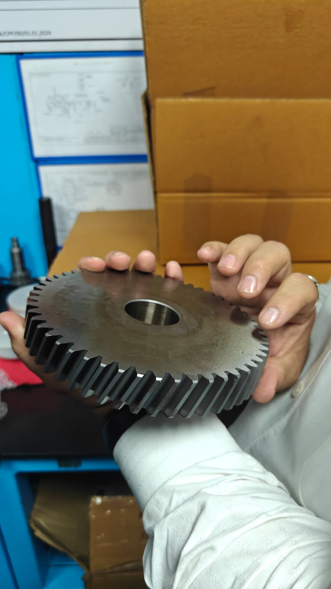
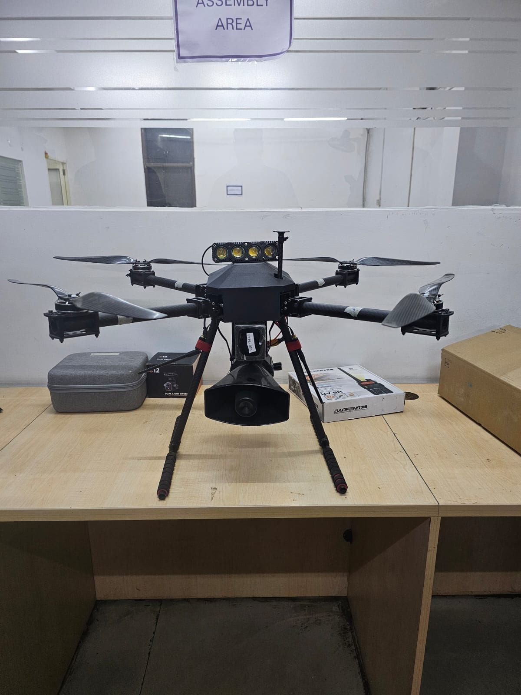
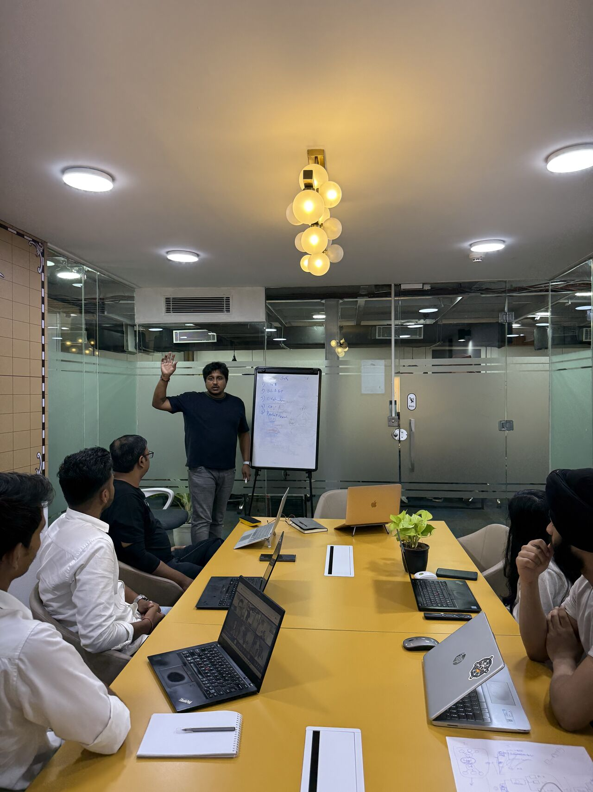
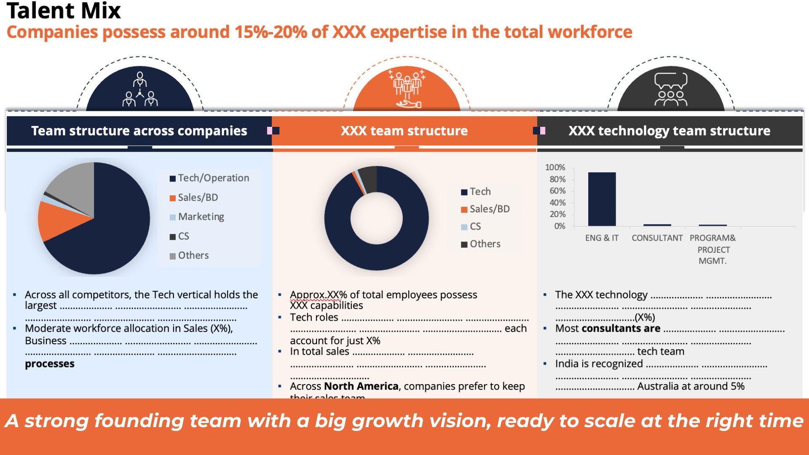
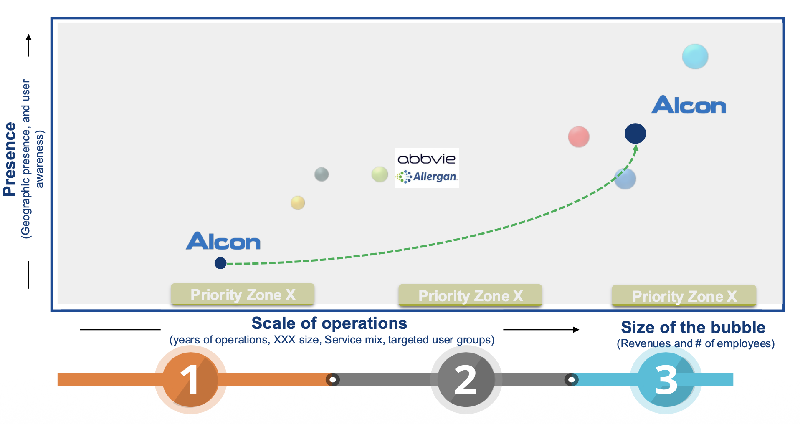
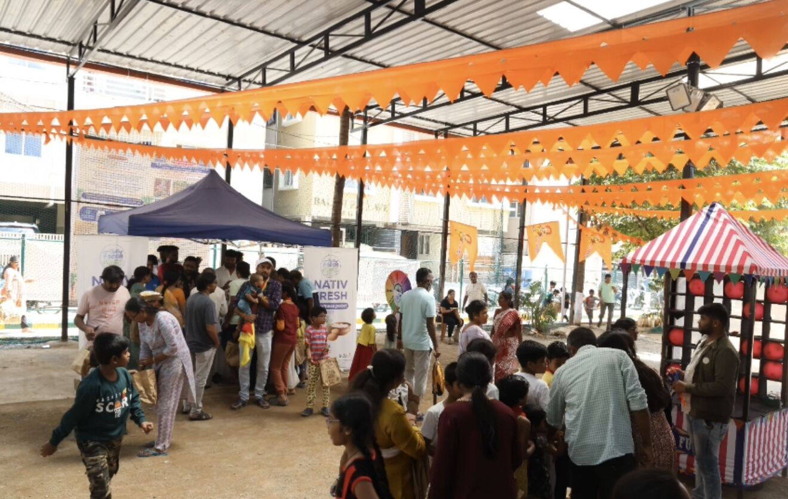
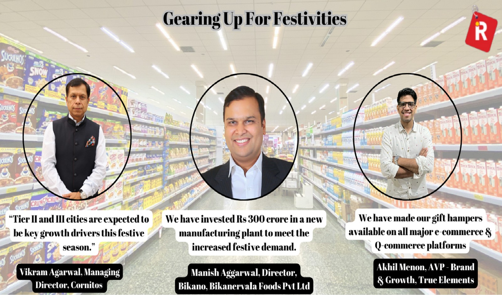
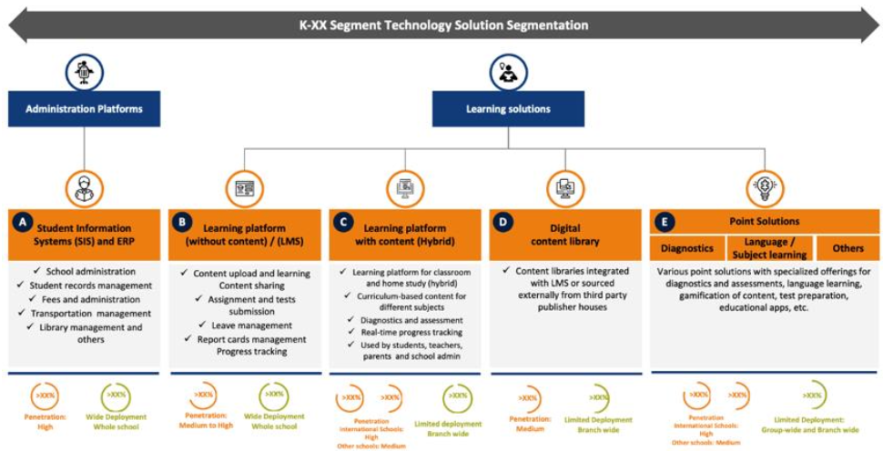
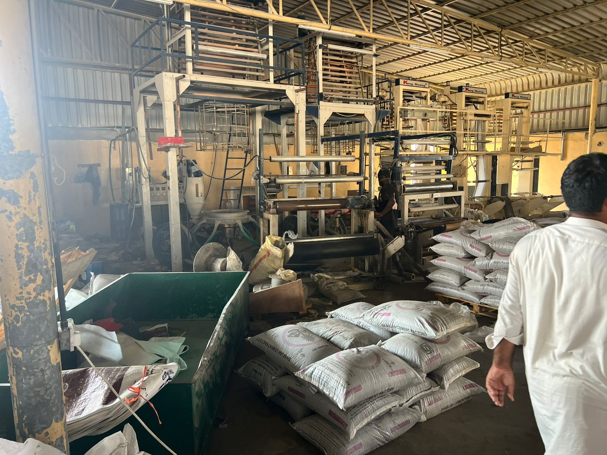
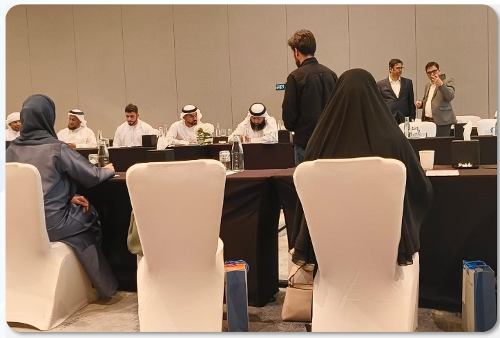

Client Work
Client outcomes and case studies.
A selection of key engagements spanning market entry, GTM execution, feasibility, and opportunity assessment – from Southeast Asia and GCC to North America, MENA, and India.
Showing all 38 case studies
Clinical Interest Was Not a Purchase Pathway.
Aligned clinical evaluation, purchasing authority, hospital economics and service readiness. Conversion and revenue outcomes remain unverified.
The Market Was Selected. The Sale Was Still Unproven.
Connected buyer qualification, conversion ownership and sales handover; revenue and conversion results remain unverified.
A Regional Base Is Not a Revenue Plan.
First-country selection and staged market commitments aligned with buyer access, procurement eligibility and delivery requirements, without claiming unverified revenue.
Automation Can Move the Cost.
Workflow economics, data readiness and accountable ownership became gates for a bounded AI pilot, without claiming unverified deployment savings.
Indonesia market access
National Reach Was Not the Same as Market Access
An SKU-first, channel-specific and geography-sequenced launch replaced nationwide distributor-led entry.
India EdTech entry
Availability Was Not Adoption
A global learning-products offering became a curriculum-aligned, channel-specific India entry plan across institutional and consumer routes.

A Launch Budget Is Not a Route to Revenue
Retailer access, product-specific regulatory readiness and first-SKU economics became linked gates for South African market entry.
Saudi MedTech entry
SFDA Approval Was Not the Market Entry
Regulatory clearance, clinical advocacy and hospital procurement were sequenced around the first Saudi hospital contract.
Gulf AI credibility
Global AI Credibility Was Not Enough: Building a Gulf Enterprise Reference
Arabic readiness, internal sponsorship and a first Gulf reference deployment aligned into an enterprise-led market-entry model.
India beauty entry
India Beauty Brand Entry: Registration, Price Architecture and Channel Sequence
A generic sector scenario showing how hero-SKU registration, India-tier pricing and channel sequencing can be designed in parallel.
GCC beauty entry
GCC Beauty Market Entry: Saudi-UAE Sequencing and Channel Control
A generic sector scenario for balancing Saudi scale, UAE brand building, regulatory readiness and distributor versus direct-channel economics.
SEA beauty growth
Southeast Asia Beauty Entry: Country Priority and Social Commerce Design
A generic sector scenario aligning country sequence, halal readiness and platform-native operating requirements before launch.
UAE cosmetics GTM
International Cosmetics Brand: UAE Market Entry & GTM
5+ cosmetics categories, 4+ consumer segments and 4+ channels assessed to create a Dubai-first, data-led GTM model.
GCC personal care
Asian Personal Care Brand: GCC Market Entry & GTM Strategy
6 GCC markets assessed and 4-5 high-potential cosmetics segments identified for a phased omnichannel expansion model.
Hair care expansion
Indian Hair Care Brand: UAE & Bahrain Market Expansion
2 GCC markets, 5+ priority channels and 2-3 hero SKUs assessed to broaden reach beyond traditional ethnic retail.
Lagos launch architecture
Nigeria FMCG Market Entry: NAFDAC, Distributor Capability and Lagos Retail Access
Registration, distributor reach and informal retail access aligned into a staged Lagos launch sequence before broader Nigeria expansion.
[Image to be supplied]
Kenya Fintech Market Entry: CBK Approval, M-Pesa Integration and Merchant Activation
Three parallel workstreams resequenced into one launch architecture. CBK regulatory pathway, M-Pesa/Daraja integration, and 15-merchant pilot cohort aligned before national rollout.

Alloy & Ferro-Metals Market Expansion across Southeast Asia
Four SEA markets mapped. Two JV-ready partners shortlisted. ₹500 Cr+ addressable opportunity sized for an Indian metals conglomerate.
Vietnam Manufacturing Ecosystem: Industrial Zone Selection for a European Components Manufacturer
Country-level attractiveness shifted to ecosystem-level decision. Location-selection risk reduced. Supply-chain readiness improved by linking supplier capability to site selection before capital commitment.
Gulf Renewable Energy Market Entry: Qualification-First Strategy for an International Solar EPC Company
NEOM vendor qualification repositioned as market-access infrastructure. Qualification-first entry model replaced opportunity-led approach. Gulf expansion sequenced around procurement readiness.

Distributor Selection & Channel Strategy for an International Gearbox Manufacturer's India Entry
8 states assessed. 50 distributors evaluated. 4 distribution partners appointed with negotiated commercial terms in 4-5 months.
Conveyor Feasibility & Mine Infrastructure for a Coal Mining Group
Three conveyor routes evaluated. ₹800 Cr capex modelled. Preferred vendor shortlist and regulatory pathway map delivered.

GTM Execution for a Defence-Linked Drone Startup
Five defence verticals mapped. Eight institutional buyer contacts secured. ₹50 Cr pilot pipeline built in a 6-month sprint.

Product-Market Fit & GTM Strategy for a B2B SaaS Platform
80 buyer interviews conducted. 3 ICP segments validated. Product roadmap reprioritised on evidence. Series A pitch ready.

North America GTM Strategy for an Enterprise Integration Platform
Three US verticals prioritised. 12 enterprise buyer interviews. $50M TAM segment identified. Full sales playbook delivered.

GCC Market Entry for an Ophthalmology Pharma Brand
Five GCC markets assessed. KOL mapping across three countries. Regulatory pathways for UAE & KSA. Four distributors shortlisted.
Canada Market Entry Strategy for a US Hospital Chain
Three Canadian provinces assessed province by province. Two partnership models evaluated. 18-month phased entry roadmap.
Clinical Trial Intelligence & Landscape for an Oncology Research Organisation
12 oncology sub-segments mapped. 200+ trial protocols analysed. 3 white-space opportunities identified. 2 trial research briefs.

Data-Led GTM for a Fresh Foods CPG Brand in Bengaluru
400+ consumer touchpoints. 7 Bengaluru micro-markets scored. Consumer-validated GTM blueprint and 18-month expansion roadmap.
UAE Retail Market Entry for a New Consumer Brand
Five retail formats assessed. Three-phase channel entry plan. Margin-protected pricing model. Full competitor positioning map.

FMCG Brand – India Market Entry
National distributor onboarded in 10–14 weeks. Modern trade listings across 4–6 metro markets. First revenue within 90–120 days.

GCC Market Entry Strategy for a UAE-Based EdTech Platform
Four GCC markets assessed. Two priority markets selected. Outcome-led repositioning. Pilot-to-scale pathways that convert.
Portfolio Commercialisation for a Leading Agri-Chemical Company
Five countries. Full value-chain primary research from growers to export markets. Portfolio roadmap grounded in field evidence.

Market Entry & GTM Strategy for an E-Waste Recycling Startup
Three regulatory pathways mapped. Four B2B buyer segments identified. ₹200 Cr market opportunity sized. Pilot model defined.

Customer Experience Transformation for a UAE Government Housing Authority
Five citizen journey stages mapped. 12 CX pain points identified. Digital transformation roadmap and three priority interventions.
Daily Dairy Brand – New Product Launch and GTM Strategy
300+ interviews and surveys. 20% increase in UAE retail outlet coverage. Profitable international expansion within Year 1.
Ethnic Snacks Brand – Strategic Expansion
250+ retail and consumer touchpoints. 3 priority categories shortlisted. A phased entry roadmap across 2 new geographies.
Spice Brand – UAE and Myanmar Market Expansion
200+ trade and consumer interviews. Regulatory pathway cleared in both markets. A distributor-led entry plan for each geography.
Protein Brand – MENA Market Entry
180+ trade, gym, and consumer interviews. 3 priority MENA markets ranked. A retail and e-commerce entry plan built for import compliance.
India Series A Investment Case – Evidence-Backed Market Entry Fundraising
Primary-market evidence rebuilt the India thesis. Milestone-linked capital structure. Series A successfully closed.
Want to understand how we'd approach your market?
Every engagement starts with a 30-minute conversation. No slides. No generic frameworks. A direct discussion of your situation and what primary research can tell you.